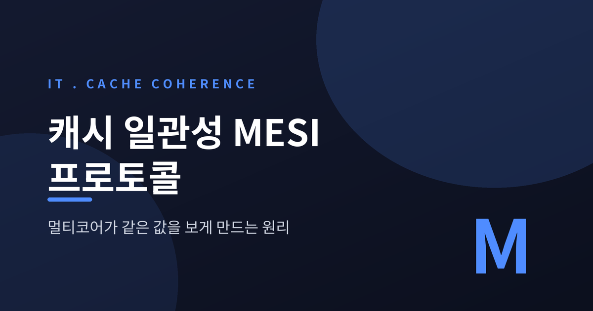
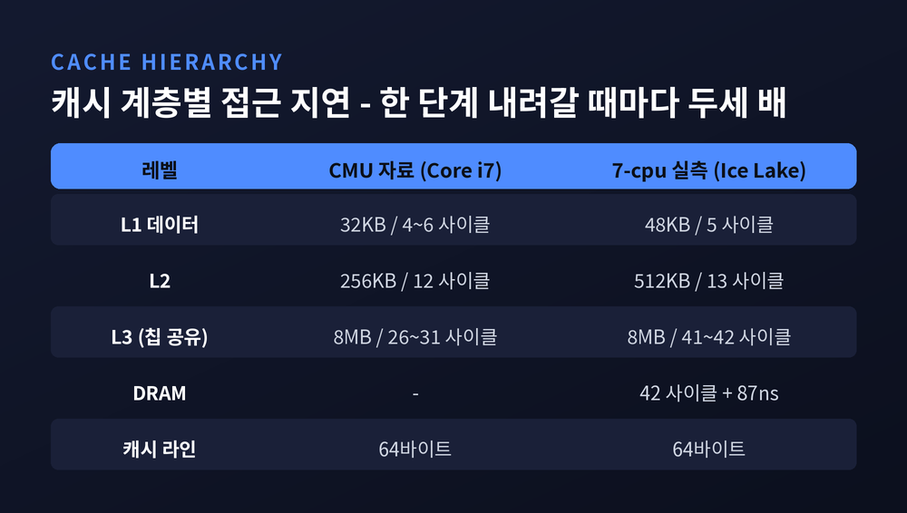
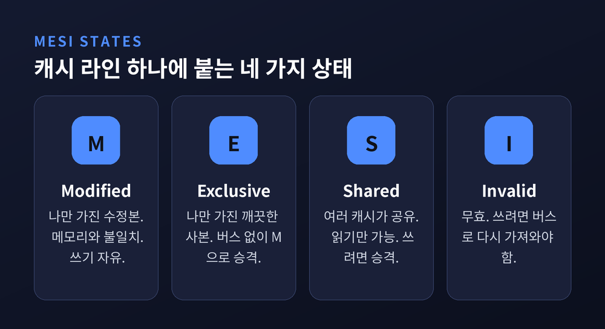
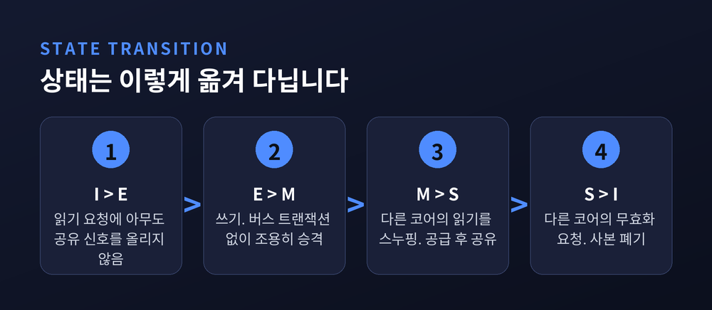
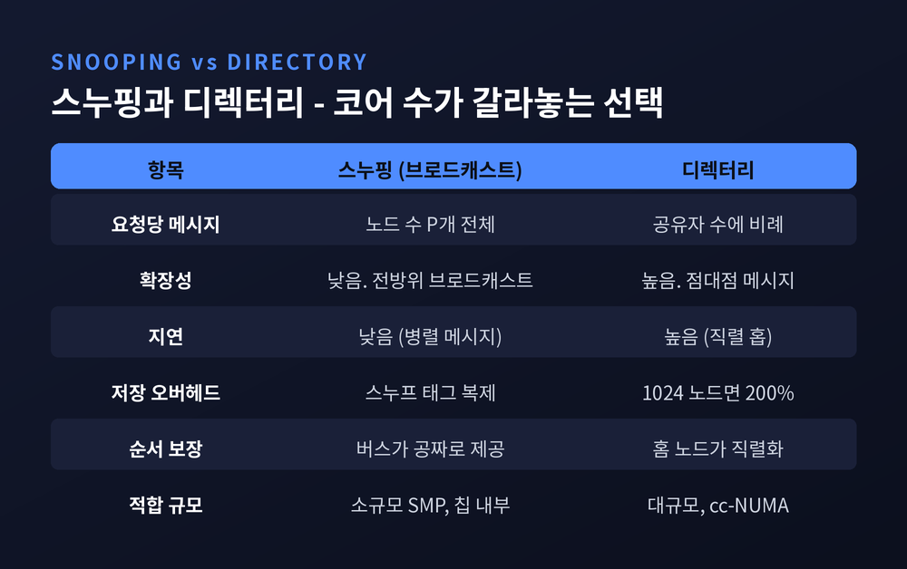
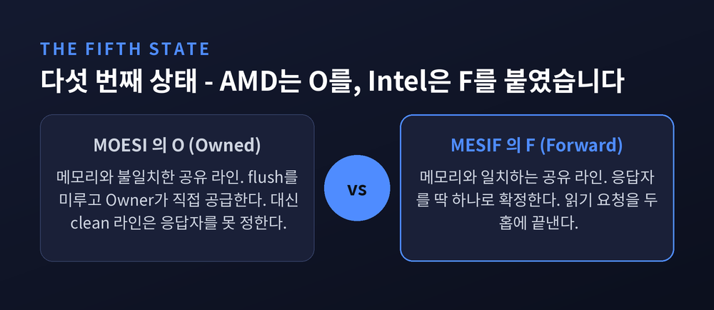
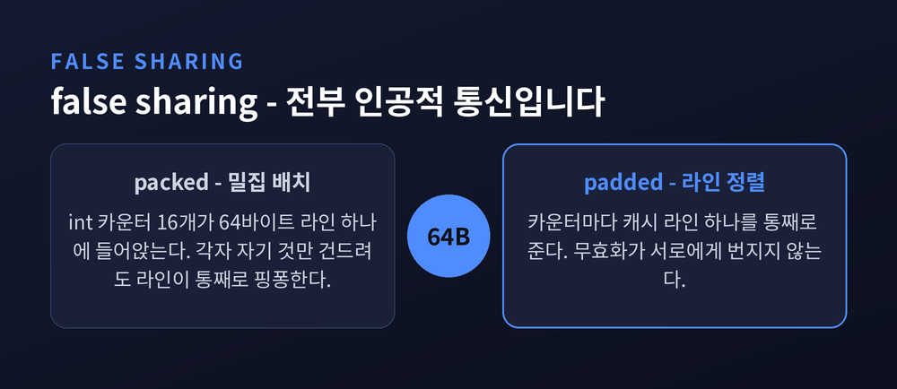

코어마다 사본을 들고 있는데도 어긋나지 않는 이유

이번 글에서는 멀티코어 CPU의 캐시 일관성 프로토콜을 정리해 보겠습니다. 코어마다 자기 캐시에 같은 주소의 사본을 들고 있는데도 값이 어긋나지 않는 이유, 그 합의를 만드는 하드웨어 규약이 오늘의 주제입니다.
먼저 세 줄로 요약하겠습니다.
문제의 출발점은 단순합니다. 캐시가 빠르기 때문입니다.
CMU 15-418 강의자료가 제시한 Core i7 계층을 보겠습니다. L1 데이터 캐시는 코어 전용 32KB에 접근 지연 4~6 사이클, L2는 코어 전용 256KB에 12 사이클, L3는 칩 전체가 공유하는 8MB에 26~31 사이클입니다. 7-cpu.com이 아이스레이크(i7-1065G7)에서 실측한 값도 결이 같습니다. L1 5 사이클, L2 13 사이클, L3 41~42 사이클, 그리고 RAM은 42 사이클에 87ns가 더 붙습니다.
절대값은 세대마다 다릅니다. 변하지 않는 것은 격차입니다. 한 단계 내려갈 때마다 비용이 두세 배씩 뜁니다.

그래서 캐시를 포기할 수 없습니다. 대신 값을 잃습니다.
USC EE 457 강의자료가 드는 예시가 명확합니다. P1이 블록 X를 읽어 자기 캐시에 담습니다. P2도 읽어서 담습니다. 이제 P1이 X에 씁니다. 바뀌는 것은 P1 캐시의 사본뿐입니다. 이때 P2가 X를 읽으면 낡은 값을 받습니다. P2도 X에 쓰면, 서로 다른 두 버전이 동시에 존재하게 됩니다.
CMU 강의자료의 진단이 이 상황을 한 문장으로 요약합니다. 일관성 문제는 전역 상태인 메인 메모리와 지역 상태인 전용 캐시가 동시에 존재하기 때문에 생긴다는 것입니다.
용어부터 정리하는 편이 좋겠습니다. 캐시 일관성(coherence)은 생각보다 좁은 약속입니다.
CMU 강의자료는 세 가지 조건으로 정의합니다.
첫째, 프로그램 순서. P가 X에 쓰고 나서 P가 X를 읽으면, 중간에 아무도 쓰지 않은 한 자기가 쓴 값이 나옵니다.
둘째, 쓰기 전파. 다른 프로세서가 X에 쓴 뒤 충분한 시간이 지나 읽으면 그 값이 나옵니다.
셋째, 쓰기 직렬화. 같은 위치에 대한 두 쓰기는 모든 프로세서에게 같은 순서로 보입니다. X에 1, 2 순으로 썼다면 어떤 프로세서도 2를 1보다 먼저 관측하지 않습니다.
여기서 두 번째 조건의 단서를 눈여겨보셔야 합니다. 전파는 보장하되, 언제 전파되는지는 규정하지 않습니다. 이 빈칸이 나중에 메모리 배리어가 서는 자리가 됩니다.
같은 자료가 경계선을 이렇게 긋습니다. 일관성은 같은 주소에 대한 읽기·쓰기의 동작을 정의하고, 메모리 컨시스턴시는 서로 다른 주소들 사이의 동작을 정의한다고요. 헷갈리기 쉬운 두 단어이지만 관할 구역이 다릅니다.
가장 소박한 해법부터 보겠습니다. 쓸 때마다 메모리까지 즉시 기록하는 write-through입니다.
메모리는 항상 최신이 됩니다. 그런데 다른 캐시에 남은 낡은 사본은 그대로입니다. 결국 무효화를 알리는 별도 장치가 필요합니다. 게다가 모든 쓰기가 메모리로 나가니 대역폭 요구가 감당이 안 됩니다.
그래서 write-back으로 갑니다. 그러자 새로운 개념이 따라옵니다. 소유권입니다.
write-back 캐시에서 dirty 비트는 곧 배타적 소유권을 뜻하게 됩니다. 유효한 사본을 가진 유일한 캐시이고, 다른 캐시가 요청하면 데이터를 공급할 책임을 진다는 뜻입니다. 그래서 이 계열의 프로토콜을 ownership protocol이라고도 부릅니다.
규칙도 여기서 나옵니다. 배타 상태의 라인은 아무에게도 알리지 않고 마음대로 고칠 수 있습니다. 반대로 배타가 아닌 라인에 쓰려면, 먼저 "나 이제 쓸 테니 너희는 더 못 읽는다"는 통보를 브로드캐스트해야 합니다. 자기 캐시에 유효한 사본이 있어도 마찬가지입니다.
기본형은 세 상태입니다. I(Invalid), S(Shared, 읽기 전용), M(Modified, 나만 가진 수정본).
버스 위를 오가는 신호는 세 가지가 핵심입니다. BusRd는 수정 의도 없는 읽기 요청, BusRdX는 읽으면서 다른 사본을 모두 무효화하는 요청, BusUpgr는 데이터는 이미 있으니 다른 사본만 무효화하라는 신호입니다. 마지막 것은 Read-For-Ownership, 줄여서 RFO라고도 불립니다.
MSI에는 분명한 낭비가 있습니다. 데이터를 읽고 나서 쓰는, 가장 흔한 패턴에서 버스를 두 번 씁니다. I에서 S로 가려고 BusRd 한 번, S에서 M으로 가려고 BusRdX 한 번입니다.
CMU 강의자료가 짚는 대목이 뼈아픕니다. 이 비효율은 애플리케이션에 공유가 전혀 없어도 발생합니다. 아무도 건드리지 않는 내 데이터를 읽고 쓰는데 버스를 두 번 점유하는 셈입니다.
1984년 ISCA에 실린 Papamarcos와 Patel의 논문이 여기에 답을 냈습니다. 일리노이 대학 어배너-섐페인에서 개발되어 Illinois 프로토콜이라는 별칭이 붙은 그 방식입니다. 논문의 목표는 명확했습니다. 버스 트래픽과 버스 대기 시간을 줄이되, 전역 테이블을 쓰지 않고, 프로세서를 추가해도 캐시 모듈을 고칠 필요가 없게 만드는 것.
해법은 S를 둘로 쪼개는 것이었습니다.
| 상태 | 사본 수 | 메모리와 일치 | 쓰기 |
|---|---|---|---|
| M (Modified) | 나 하나뿐 | 불일치(dirty) | 즉시 가능 |
| E (Exclusive) | 나 하나뿐 | 일치(clean) | 버스 없이 즉시 가능 |
| S (Shared) | 여럿 | 일치(clean) | 불가, 승격 필요 |
| I (Invalid) | — | — | — |

E는 "깨끗한데 나만 갖고 있다"는 상태입니다. 배타성을 소유권에서 떼어낸 것이죠. 메모리 사본이 아직 유효하므로 flush 책임이 없고, 그러면서도 유일한 사본이므로 남에게 물어볼 것도 없습니다.
그 결과 E에서 M으로 올라갈 때 버스 트랜잭션이 발생하지 않습니다. 조용히 승격합니다. MESI가 MSI를 대체한 이유는 사실상 이 한 줄입니다.
그런데 캐시는 자기가 유일한 사본인지 어떻게 알까요.
버스에 신호선을 하나 더 답니다. USC 강의자료가 설명하는 shared 핸드셰이크 신호입니다. 읽기 요청이 버스에 올라오면, 사본을 가진 다른 캐시들이 이 선을 당깁니다. 아무도 당기지 않으면 요청한 쪽은 자기가 유일하다고 가정해도 됩니다.
그래서 I 상태에서 읽기가 발생하면 두 갈래로 갈립니다.
전이 규칙을 표로 옮기면 이렇습니다.
| 현재 | 이벤트 | 버스 동작 | 다음 |
|---|---|---|---|
| I | 읽기, 아무도 사본 없음 | BusRd | E |
| I | 읽기, 다른 캐시에 사본 있음 | BusRd | S |
| I | 쓰기 | BusRdX | M |
| E | 쓰기 | 없음 | M |
| E | 원격 BusRd 스누핑 | shared 신호 assert | S |
| S | 쓰기 | BusUpgr | M |
| S | 원격 BusRdX/BusUpgr 스누핑 | — | I |
| M | 원격 BusRd 스누핑 | Flush | S |
| M | 원격 BusRdX 스누핑 | Flush | I |

M 상태 라인에 반복해서 쓰는 동안에도 버스는 조용합니다. write-back의 이득이 여기서 나옵니다.
지금까지 이야기는 전부 버스를 전제했습니다. 모두가 같은 매체를 듣고 있으니 브로드캐스트가 공짜였습니다.
코어가 많아지면 그 전제가 무너집니다. CMU 강의자료의 표현대로, 캐시 미스가 날 때마다 그 캐시가 다른 모든 캐시와 통신합니다. 확장 가능한 점대점 인터커넥트를 써도 메모리 요청 하나당 P개의 메시지가 필요합니다. 전방위 브로드캐스트는 근본적으로 확장되지 않습니다.
구현 부담도 만만치 않습니다. 스누핑에 응답하느라 프로세서의 로드·스토어가 방해받지 않으려면 태그를 복제해 두어야 합니다. 참고로 GPU는 지금까지도 캐시 일관성을 구현하지 않습니다. 그래픽 작업에서는 이 오버헤드가 값어치를 못 한다고 판단됐기 때문입니다.
같은 자료가 버스의 역할을 다시 뜯어봅니다. 버스가 준 것은 두 가지, 순서와 통신입니다. 그런데 일관성은 서로 다른 주소에 대한 요청의 순서를 요구하지 않습니다. 그리고 브로드캐스트도 요구하지 않습니다. 공유자에게만 알리면 됩니다.
그래서 디렉터리가 등장합니다. 라인마다 "누가 사본을 갖고 있는지"를 한 곳에 적어 두고, 그 목록에 있는 노드에게만 점대점 메시지를 보냅니다.

대가도 있습니다. 홉이 늘어납니다. 더티 라인에 대한 읽기 미스 하나를 처리하는 데 기본형은 다섯 번의 네트워크 트랜잭션이 필요하고, 그중 넷이 임계 경로 위에 놓입니다. 저장 공간도 문제입니다. 64바이트 라인 기준으로 노드가 64개면 오버헤드가 12%, 256개면 50%, 1024개면 200%까지 올라갑니다.
그래서 실무는 타협합니다. 공유자 수가 대체로 적다는 관찰이 근거입니다. Ocean 벤치마크에서는 쓰기의 99% 이상이 공유자 다섯 이하였습니다. 그렇다면 전체 비트맵 대신 포인터 몇 개만 두면 됩니다. 또 메모리 대부분은 애초에 캐시에 없으니, 디렉터리 크기를 메모리가 아니라 캐시 크기에 비례하게 만들 수도 있습니다.
오늘날 멀티코어가 고른 답은 세 번째입니다. 공유 L3에 디렉터리를 심는 방식입니다. Core i7이 그렇게 합니다. L3는 inclusive이고, 디렉터리는 해당 라인을 가진 L2 목록을 들고 있습니다. 모든 L2에 소리치는 대신 목록에 있는 L2에게만 보냅니다. 덧붙이자면 Core i7의 코어 간 연결은 버스가 아니라 링입니다.
MESI에는 남은 구멍이 하나 있습니다. S 상태 라인을 여러 캐시가 갖고 있을 때, 새 읽기 요청에 누가 응답할지 정해져 있지 않다는 점입니다. 그래서 느린 메모리가 대신 공급하거나, 모두가 응답해 중복이 생깁니다.
인텔과 AMD는 각각 다른 글자를 붙여 이 구멍을 메웠습니다.
| 구분 | MESIF (Intel) | MOESI (AMD) |
|---|---|---|
| 추가 상태 | F (Forward) | O (Owned) |
| 메모리와 값 | 일치(clean) | 불일치(dirty) |
| 주된 목적 | 읽기 요청 응답자 확정 | 메모리 갱신 지연 |
| 효과 | 응답자 1명 보장 | flush 회피, 캐시 간 직접 공급 |

MESIF의 F는 Goodman과 Hum의 2009년 문서에 이렇게 표현돼 있습니다. "동등한 것들 중 첫째"라고요. 라인을 공유하는 노드들 가운데 딱 하나에만 부여되고, 요청이 오면 내용을 공급할 책임을 집니다. MOESI의 O와 닮았지만 결정적으로 다릅니다. F는 메모리와 값이 일치하고, 쓰기가 아니라 읽기 요청을 빠르게 하려는 상태입니다.
이 프로토콜은 2001년 6월에 완성됐고, 상업적 사정으로 8년간 공개되지 않았습니다. 인텔의 QuickPath Interconnect가 여기서 파생됐습니다. 효과는 홉 수로 나타납니다. 다른 캐시에 E나 M으로 있는 라인을 가져올 때 3-hop 프로토콜은 세 홉이 필요하지만, MESIF는 두 홉이면 됩니다. 문서의 성능 투사로는 4GHz·4노드 TPC-C에서 6~11% 향상입니다.
MOESI의 O는 반대 방향입니다. USC 강의자료의 근거가 간결합니다. M에서 S로 내려갈 때 flush가 일어나고, 이는 느린 메인 메모리 갱신을 부릅니다. 그러니 메인 메모리 갱신은 꼭 필요할 때까지 미루는 게 최선이라는 것이죠. M에서 S 대신 M에서 O로 보내고, 메모리는 낡은 채로 둡니다. 그동안 다른 캐시의 읽기 요청은 Owner가 빠르게 처리합니다.
그래서 MOESI에서는 S의 의미마저 달라집니다. 공유 라인이 메모리 대비 dirty일 수 있습니다. 그런 경우 어딘가에 반드시 O 상태 캐시가 하나 있고, 그 캐시가 갱신 책임을 집니다.
한계도 분명합니다. MOESI는 dirty 라인은 빠르게 공유하지만 clean 라인에서는 응답자를 정하지 못해 결국 메모리를 씁니다. MESIF가 푼 문제를 MOESI는 못 풉니다. 그래서 둘을 합친 MOESIF도 가능합니다.
여기까지가 프로토콜의 좋은 면입니다. 이제 대가를 보겠습니다.
프로토콜의 관리 단위는 바이트도 워드도 아닙니다. 캐시 라인입니다. x86과 대부분의 ARM에서 64바이트입니다.
false sharing 글의 한 문장이 이 대가를 정확히 짚습니다. 일관성 프로토콜은 입도가 거칠어서 어떤 쓰기든 라인 전체를 무효화하며, 그래서 8바이트짜리 정수 하나를 갱신하면 이웃한 56바이트도 함께 무효화된다는 것입니다.
전형적인 코드는 이렇게 생겼습니다.
// 스레드별 누적 변수 — 무엇이 문제일까요
int myCounter[NUM_THREADS];int가 4바이트이니 64바이트 라인 하나에 카운터 열여섯 개가 들어앉습니다. 스레드 열여섯이 "각자 자기 것만 건드린다"고 믿지만, 하드웨어 눈에는 같은 라인을 두고 벌이는 싸움입니다. 라인이 캐시들 사이를 핑퐁하며 트래픽을 만듭니다.
CMU 강의자료가 이 상황을 이렇게 정리합니다. 본질적 통신은 전혀 없고, 전부 인공적 통신이라고요. 필요해서 주고받는 게 아니라, 배치를 잘못해서 생긴 통신이라는 뜻입니다.

해법은 패딩입니다. 리눅스 커널은 __cacheline_aligned_in_smp 매크로로 처리합니다. C++17은 alignas와 hardware_destructive_interference_size를 제공합니다. 상수가 아니라 구현이 알려 주는 값인 이유가 있습니다. 라인 크기가 플랫폼마다 다르기 때문입니다.
실측도 있습니다. 2023년에 공개된 Rust MPSC 큐 벤치마크가 Apple M1 Pro, Intel i5-9600k, AMD EPYC Milan, Intel Cascade Lake 네 플랫폼에서 밀집 배치와 패딩 배치를 비교했습니다. 결론은 밀집 배치가 전 구간에서 더 느렸고, 스레드 수가 늘수록 격차가 벌어졌다는 것입니다.
다만 여기에는 솔직한 단서가 붙습니다. 같은 실험의 서버 플랫폼에서는 생산자가 열다섯을 넘고 경합이 극심할 때 오히려 밀집 배치가 좋았습니다. 더미 명령을 넣어 압력을 줄이자 패딩 배치가 앞서기 시작했습니다. 저자도 멀티 소켓·멀티 NUMA 구성의 인터커넥트 특성 탓으로 추정할 뿐 확정하지 못했습니다. 캐시 라인 정렬은 강력한 원칙이지만 만능은 아닙니다.
마지막으로 가장 자주 오해되는 지점을 짚겠습니다.
하드웨어가 MESI를 완벽하게 지키는데도, 왜 프로그래머는 여전히 메모리 배리어를 써야 할까요.
캐시 일관성 입문 글의 설명이 가장 깔끔합니다. 스토어 버퍼와 무효화 큐는 일관성 프로토콜에 아예 들어오지 않는다는 것입니다. MESI 입장에서는 버스에서 무효화 트랜잭션에 ack를 보낸 순간 그 라인은 이미 I 상태이고, 이후의 모든 버스 트랜잭션에 대해 I처럼 행동하겠다고 약속한 것입니다.
그 ack가 실제 캐시 반영보다 앞설 수 있다는 사실, 스토어가 캐시에 닿기 전 버퍼에 머문다는 사실은 프로토콜이 관여하지 않는 영역입니다. 구현 세부사항일 뿐입니다.
Sorin과 동료들의 교과서는 더 단호합니다. 컨시스턴시와 달리 캐시 일관성은 소프트웨어에 보이지도 않고, 필수도 아니다라고 씁니다.
MESIF 문서도 같은 선을 긋습니다. MESIF는 순차 일관성을 강제하지 않고 지원할 뿐이며, 프로세서 설계가 제약을 완화하면 같은 하드웨어 위에서 더 약한 메모리 모델이 나온다고요. 완료 확인을 받기 전에 변경을 노출하거나, 무효화를 ack한 뒤에도 그 라인의 값으로 로드를 커밋하는 식으로 말입니다.
예전에는 "캐시 일관성이 곧 순서 보장"이라고 생각했습니다. 지금은 두 층이 완전히 분리된 것으로 봅니다. 아래층에서 MESI가 같은 주소에 대한 합의를 만들고, 위층에서 메모리 모델이 서로 다른 주소들 사이의 순서를 규정합니다.
정리하면 이렇습니다.
MESI는 캐시 라인 하나에 두 비트를 붙여 네 가지 상태를 표시하고, 버스 신호 몇 개로 그 상태를 옮겨 다니게 만드는 규약입니다. E 상태 하나를 추가해 가장 흔한 접근 패턴에서 버스 트랜잭션을 지웠고, F와 O를 더해 응답자 문제와 flush 비용을 각각 해결했습니다. 코어가 많아지자 브로드캐스트를 버리고 디렉터리로 갈아탔습니다. 40년 넘게 같은 문제를 조금씩 다듬어 온 셈입니다.
그리고 그 대가가 64바이트라는 입도입니다. 여기서 false sharing이 나옵니다.
"프로토콜은 주소를 보지 않습니다. 라인을 봅니다."
코드를 쓰면서 캐시 라인의 경계를 의식해야 하느냐고 물으신다면, 대부분의 경우에는 아니라고 답하겠습니다. 다만 스레드마다 하나씩 들고 있는 그 작은 카운터 앞에서만은, 잠깐 멈춰 서 보시길 권합니다.
참고 소스